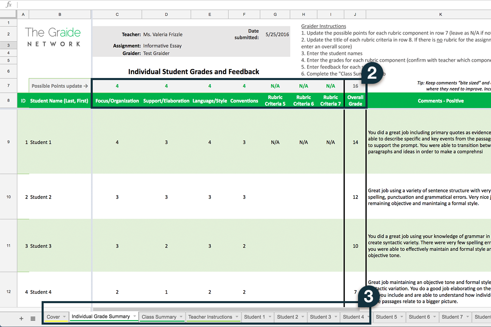
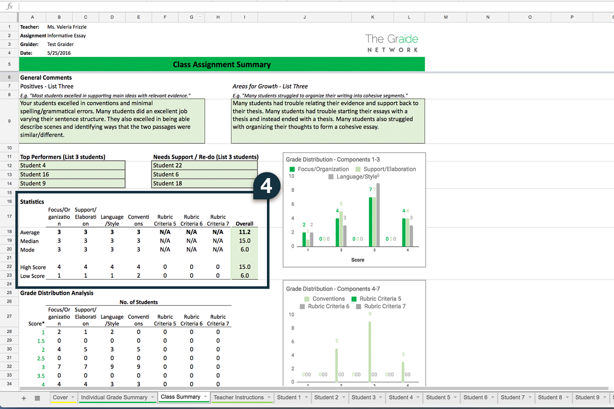
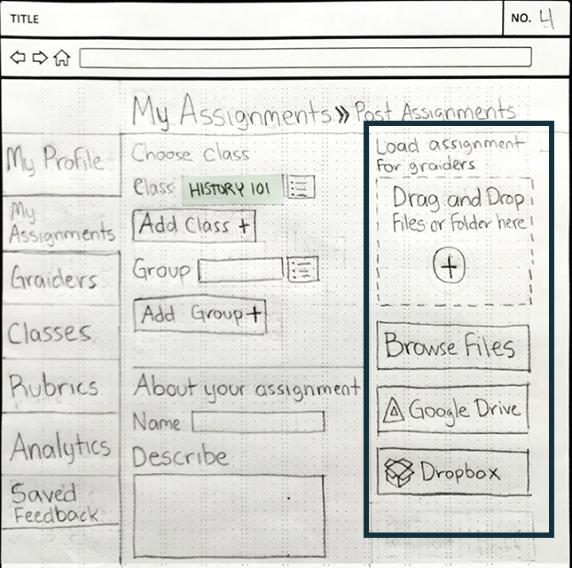
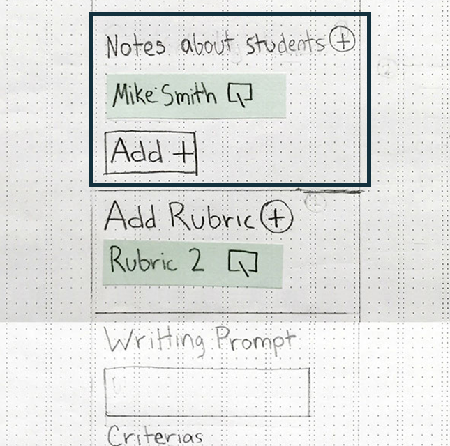
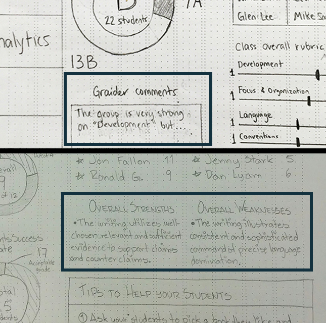
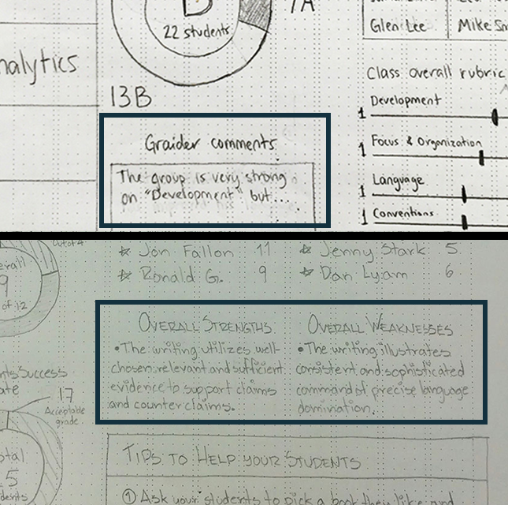
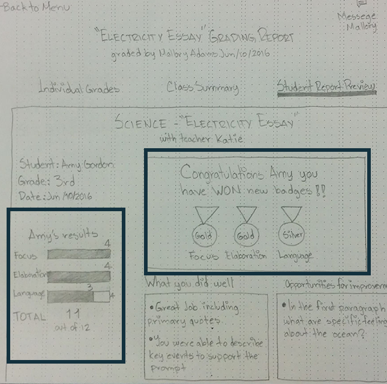
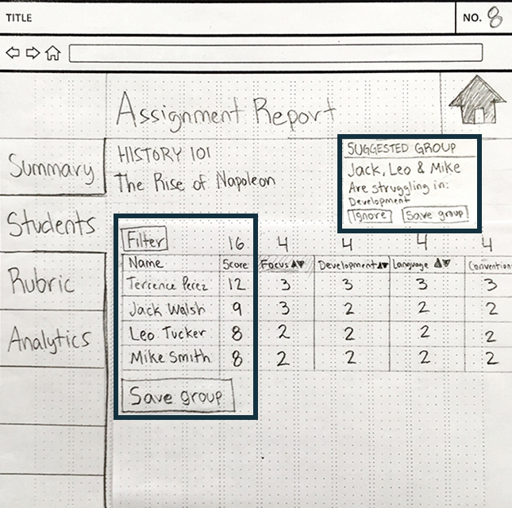

The Brief
Launched September 2015, The Graide Network (TGN) connects teachers with undergraduate education majors. These undergraduates help teachers grade their students’ work. Currently, the grading takes place off-platform, via downloadable Excel templates. Our task was to prepare low- to mid-fidelity interaction designs focused on the teacher's side of the platform. We conducted user interviews and usability testing, as well as broader field research, in order to find and improve pain points in the current process, know how our client compares with competitions, and determine their value in the education technology ecosystem.

The Research
In our first round of testing, we interviewed seven teachers who had never used the platform. We wanted to know their daily struggles as educators and determine how TGN can be useful to them. I studied the educational technology ecosystem and made a strengths, weaknesses, opportunities, and threats (SWOT) analysis. This analysis aimed to define what sets our client apart from competitors. The official name for undergrad students who help teachers grade assignments in this platform is "Graiders". But for clarity, I will use the term "graders" instead.
Usability Testing
First, we interviewed teachers to learn about their grading process without assistants or tools. Then we had teachers use The Graide Network while sharing their thoughts aloud. They also used our client's competitor to draw comparison between both products. From this test, we got educators’ insight about how we can improve their grading process. We listed pain points and preferences they had with the interface.
During our initial meeting with our client, we a found few assumptions we needed to confirm or deny. It was essential for us to have a clear idea of what teachers wanted and found helpful from the platform.
- Adding personalized notes about particular students.
- Viewing and tracking students' performance.
- Reusing and pre-populating rubrics.
- An easier way to share grades and provide feedback to the class.
Findings
-
Cover Page

Cover Page
Graders miss or skip the directions on the Cover Page.
This causes them to use the spreadsheet incorrectly or use other resources, such as a Google Docs, to record grades and feedback.
-
Individual Grade Summary
Individual Grade Summary
Graders download the rubric attachment, then manually populates the spreadsheet with the rubric’s criteria and scoring per the criteria. Teachers wanted to see how students are doing on each rubric criteria by looking at the scores.The scores tell educators where to focus their efforts to help students who are struggling in a particular subject.
“It’ll be good to know which particular students are not doing well in this component."
“I would tally the bottom to show what I need to focus on.”
-
Class Summary
Class Summary
Educators like knowing which students need help with assignments, while at the same time ensuring top-performers are motivated and engaged.
Some teachers said that an overall grade is more useful than an average per each rubric measure.
“I would like to see the overall grade as opposed to the average for one criteria in the rubric.”
“I’ll want to know what to do with the data.”
-
Student Page

Student Page
Users suggested a graph to see student's needs across each rubric criteria. Interviewers wanted to print this page to share with students.
“Teachers struggle to know individual student needs, graph could help teachers on that.”
“I would print this page for the students.”
Takeaways from usability testing
- We gathered a list of pain points to address on our initial prototypes.
- We validated that “The Graide Network” help teachers save time.
- Educators are willing to use a new and improved technology that replaces the current one
"This saves a lot of time, I would definitely use this."
The education environment
To further determine our client's potential value, we studied the education ecosystem and found the following:
- Timely feedback is essential to a student’s progress. (source)
- Student comprehension of recently read material improves with more immediate feedback. (source)
- Teachers spend an exhausting amount of time performing instructional duties and non-compensated school-related activities such as grading, tutoring, bus duty, or club advising (source)
Takeaways from domain research
- The Grade Network improves the grading process and eases a teacher’s workload.
- Graiders give The Graide Network an edge over its competitors.
- It provides reliable quantitative data about student and teacher productivity.
- It gives real education experience to undergraduate students who aspire to become teachers.
- There is plenty of room for growth.
From our conversations with teachers, we were able to see two trending mindsets. Defining these trends helped us stay focused on their needs. We framed these mindsets as: The Experienced Educator and The Resigned Teacher.
We created a Journey Map to illustrate teachers’ pain points when using the platform. Then counter these pain points with opportunities for improvement.
Defining the Problem
“Although The Graide Network helps teachers save a lot of time grading, the platform could be improved by making it an effective means of communication between teachers and graders, and by providing intuitive tools and immediate results to teachers of all experience levels.”
Teachers do not have time to provide timely, actionable, and personalized feedback to students. They need support giving students valuable feedback, and tracking a student’s progress.
We defined and documented teachers' problems, needs and wants from our data. We also, understood our product in the context of the education ecosystem. We then began ideating a solution to help our users reach their goals. The following set of design principles guided our decisions and choices.
Design principles
Personal
Feedback is personalized and unique for every student. The platform is central for teachers and graders to interact. They need to discuss each student’s needs and performance. It is important for them to set expectations when grading assignments and providing feedback.
Trustworthy
Build accountable relationships with an open and transparent communication system. Teachers need to feel comfortable using The Graide Network and confident in their ability to complete their goals with the help of credible and caring teaching assistants.
Digestible
Help teachers of all levels of expertise adapt to the platform by using familiar language and a simple interface. Every teacher should be able to see the value of The Graide Network immediately.
Actionable
Help students learn and grow by delivering clear and timely feedback. Keeping feedback accessible in order for kids to learn how to improve themselves benefits everyone (students, teachers, graders and parents).
Each of us designed a paper prototype with these principles in mind. The three prototypes proposed different solutions to teachers’ problems. We then tested them with users to find out which one they preferred.

DESIGN AND CONCEPT TESTING
We created our designs around three essential tasks: adding a new class, posting an assignment, and analyzing the grade report. The team adopted a multivariate testing approach. We had seven teachers use and compare how each or our prototypes managed the three essential tasks. By thinking aloud, they informed us about their preferences. Three of the seven teachers interviewed have used The Graide Network before. Our focus was on how teachers interacted with the platform, so actual grading was not tested
Test Findings
-
Main Page


Message system
Teachers liked the message system on the homepage to communicate faster with grader. Students feel that
the grader's input is trustworthy because it is unbiased. It adds value to the results."Having the teacher and evaluation role separated help kids. They see graders as their evaluators and teachers as a resource to help them improve."
-
Posting Assignment


Posting Assignment options
Teachers wanted to find the class first and post the assignment from there. They would rather have their class's information cached to save time when posting.
-
Assignment Page
Assignment page
Teachers found it useful having tools like Google Drive and Dropbox. Both are helpful additions to the uploading process.
The “drag and drop” feature made loading assignments easier and saved time.
Teachers reinforced wanting to write notes to graders about particular students.
-
Graiders


Selecting a graider when posting an assignment
Teachers preferred browsing for a grader while filling the assignment form. According to testers, grader's profiles with picture made the selection process more personable.
-
Class Summary
 
Useful class summary
Side by side graphs made comparing results easier for teachers.
Organizing a class’s strengths and weaknesses by the rubric is helpful. Educators can use that information to plan targeted lessons focused on student struggles.
Graders’ comments in this section add context and improve communication.
-
Students report
Students report
According to teachers, data represented by a bar graph was clearer for students. They saw the badge section as a great addition to motivate students.
They liked being able to sort between students who are struggling in the same topic. Then save them as a group to give targeted assignments and follow up on their progress.
Takeaways from concept testing
- Teachers want an effective means of communication with graders and students.
- Teachers loved the visual representation of data.
- Teachers want to know where the data is coming from.
- Teachers can use the data to plan further classroom instruction.

CONVERGING AND REFINING OUR RESULTS
My team went back to the drawing board to discuss our findings. We then listed some essential features that proved helpful for our users, then merged them into a single redesigned platform.
Prototype Walkthrough
Information at a glance
“I prefer to post assignments in the classes page.”
Personal – Actionable
The Classes page is the platform's dashboard where teachers create and manage their classes. We opted for an interface reminiscent of Google classroom to lower the learning curve. The card format and large font size makes it easy for teachers to read at a quick glance. We decided to remove the “My Profile” page and use icons at the top right corner to save space.

Primary goal upfront
“I prefer to post assignments in the classes page.”
Actionable – Personal – Trustworthy
Teachers can add homework from their saved classes. We learned from research that sometimes teachers shared an assignment with various classes. We added the function to add multiple classes per assignment post. The prototype also included the capability to add notes about individual students. Now teachers can inform graders about a student's specific needs.

Digestible Data Visualization
“I can’t read small text. I like the big numbers.”
Actionable – Digestible – Trustworthy
From the My Assignments page teachers can post new assignments. They can also see an assignment’s status and access the ones that need reviewing.
In interviews, teachers expressed they liked having graphs first and upfront on the Grading Report. They preferred a bar graph over a circle chart because it was easier for students to understand. Teachers reported that this data helped them create smarter lesson plans.
The Top Performers and Needs Support section can inform an educator's strategy. They can group students with similar struggles; or pair top performers with students who need support.
Further testing
My team completed this prototype with real user input in less than three weeks. This was a great challenge and achievement. However, a complete product requires additional testing that tackles other issues brought up in the research. These are some of my team's suggestions:
Analytics
Other than an individual and class summary per rubric, our client should find other useful data that helps teachers, with a simple presentation for quick visualization.
Data selection
Avoid excess data. Show only essential, valuable information on graphs.
Scores over time
Having the option to see students’ grades over time is highly useful for teachers.
Rubrics
We recommended automating the process of uploading rubrics to assignments. Teachers can save time by creating and saving rubrics to reuse in the platform, eliminating the need to use external tools like Google or Rubistar. It also reduces human error when graders don't populate the rubric manually. Searching databases to find and load rubrics, such as a standard STEM rubric is also useful.
Graders
Currently, finding a grader is a confusing double opt-in process. It wasn't clear to teachers that they needed to wait for a grader to accept their request to grade an assignment. They confused sending a request to grade with assigning to grade homework. This issue highlights the importance of improving communication between teachers and graders.
We recommended showing a list of favorite or suggested graders along with their availability. This addition could make the process more social and also add a personal touch, facilitating an honest and longstanding relationship.
Rate and review
A rating system can boost a grader's credibility, improving their skills with teacher's feedback and mentorship. Furthermore, teachers will make informed selection by reading colleague's recommendations and reviews.
Streamline requests
Graders should be able to request working on assignments. This way teachers and graders choose their workload based on preference and availability.
Future considerations
Creating, saving & editing groups
In our research, I identified and tested an opportunity for the The Graide Network to add value to their product. By helping teachers identify and create custom groups of struggling students to track their progress, teachers can provide targeted lessons, give relevant feedback and measure the effectiveness of their strategy. Grouping students with similar needs and creating custom lessons for them, is a common strategy between teachers. But, currently educators don't have a tool that helps them track progress on particular groups of students.
This tool can prove particularly valuable for teachers who get pay raises based on student performance. And again, because "grouping" is a standard practice between teachers, it makes the platform relatable and easier to sell.
Grade and feedback within TGN
Graders could add notes straight into the assignment from within the platform, making feedback digestible for students and easier to understand. It also makes the grading process quicker, helping more students in less amount of time. Plus, teachers get their results faster and can implement changes to their curriculum immediately.
Messaging system for teachers
Currently, only graders have a message system in a mobile application. Teachers want a notification for when graders see their message.
Mobile app for parents
Parents can use the TGN mobile app to see their children’s progress and assignment grades.
What We Learned
Scalability was one of the challenges we faced while redesigning this product. The Graide Network can change the education system by becoming a progress measuring tool for teachers and students. Although that's a good selling point, it is not the platform's minimal viable product. Being a means for teachers to find undergraduate students that can help them grade student's homework and provide actionable feedback is The Graide Network’s primary function. That's what makes the platform unique. Focusing on improving that relationship will add value to the product. In our process, we had to stay mindful and not lose track by adding too many secondary features. Nevertheless, we found that sharing with our client any opportunity for growth was essential.
Final Thoughts
Being part of something that can change the education system so positively was incredibly rewarding. The Graide Network will benefit a lot of people with its success. Teachers have a tool that gives them more control over students’ progress and achievements. It improves students’ education and their chance of becoming successful, productive citizens, at the same time, bettering educators' own productivity and work-life balance. It also helps parents keep a closer look at their kid's education. And finally, The Graide Network benefits society as a whole by developing generations of more educated people.